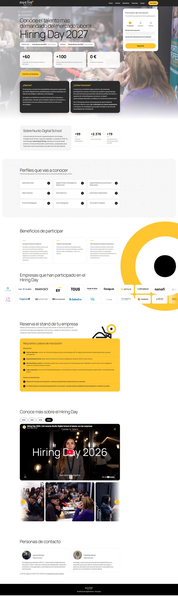
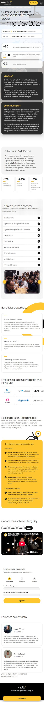

Diseño UI/UX y desarrollo
Hiring Day 2027
De las necesidades de Career & Talent a una landing que capta empresas
La feria de empleabilidad de Nuclio Digital School, que conecta empresas con el talento formado en IA, datos y producto digital en Barcelona y Madrid.
- Figma
- HTML
- CSS
- JavaScript
- Diseño responsive
- UX Writing
Qué hice
- Definición de la página a partir de las necesidades del servicio de Career & Talent.
- Diseño en Figma e implementación completa, de escritorio a móvil.
- Formulario de inscripción en tres pasos para reducir la fricción.
- Perfiles, beneficios y requisitos ordenados para que la empresa decida rápido.
- Vídeos por edición, galería y logos de empresas para generar confianza.